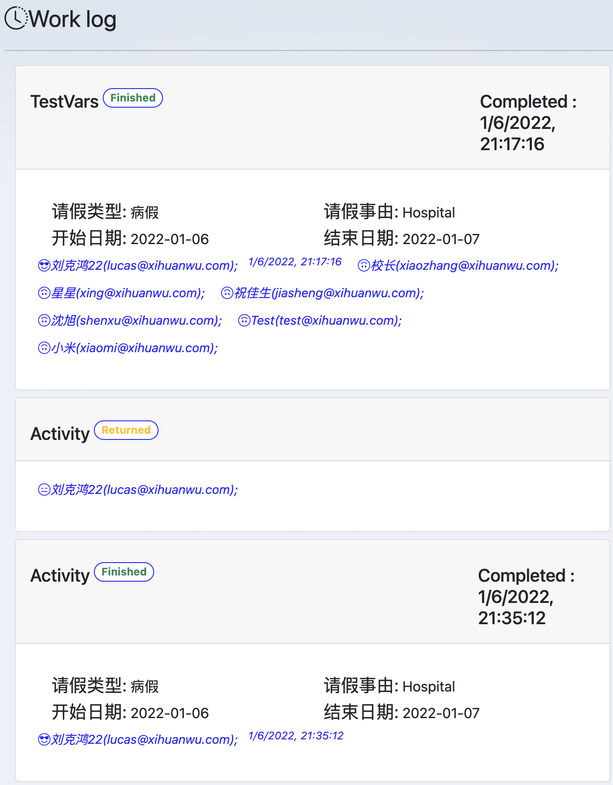

Work log
Work log show the log of task execution of a process

Log Card
Each card represents a task, contains
- Task title
- Task status
- Complete time
- Work-level variables and their values if exit
- Participant.
Participant
Each participant is shown with a smiley, name, email and time of enact.
Emoji
 This person has taken no action on this task up to now.
This person has taken no action on this task up to now.
 This person completed this task.
This person completed this task.
TangYing: This person has been assigned to this task, but other person complete it.